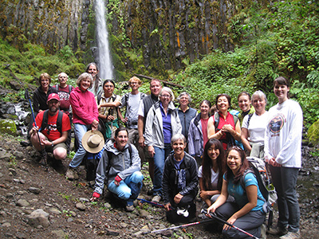

Take A Hike
- Start
- June 3, 2013 at 3:00 pm
- End
- June 3, 2013 at 3:00 pm
Through strategic partnerships and collaboration, the Human Resources Department recruits, develops and retains a high performing and diverse workforce and fosters a healthy, safe, and productive work environment for employees, their families, departments, and the public in order to maximize individual and organizational potential and position San Mateo County as an employer of choice.
Action
Rocio has championed professional development not only for herself but for her staff and colleagues, too.
Meet JulieInterested in information on the County's application, examination and interviewing process?
Apply Now
June 3
Take A Hike encourages you to discover a County Park each month from April through October. Participants learn about local parks and are encouraged to use the trails to stay active and healthy. This year's schedule features one park that was not included in prior seasons. View Details
Today, the County of San Mateo Board of Supervisors welcomed three Code for America Fellows. The county is one of just ten sites selected.
Read LinkIn the early morning hours of January 24, over 200 volunteers set out on foot and in cars to count the number of homeless individuals and families in San Mateo County.
Read LinkToday, the Human Services Agency (HSA) received national re-accreditation through the New York-based Council on Accreditation (COA).
Read LinkCode for America, a San Francisco-based nonprofit that matches technology sector skills to local communities, has selected the County of San Mateo as one of its ten municipal partners for 2013
Read Link